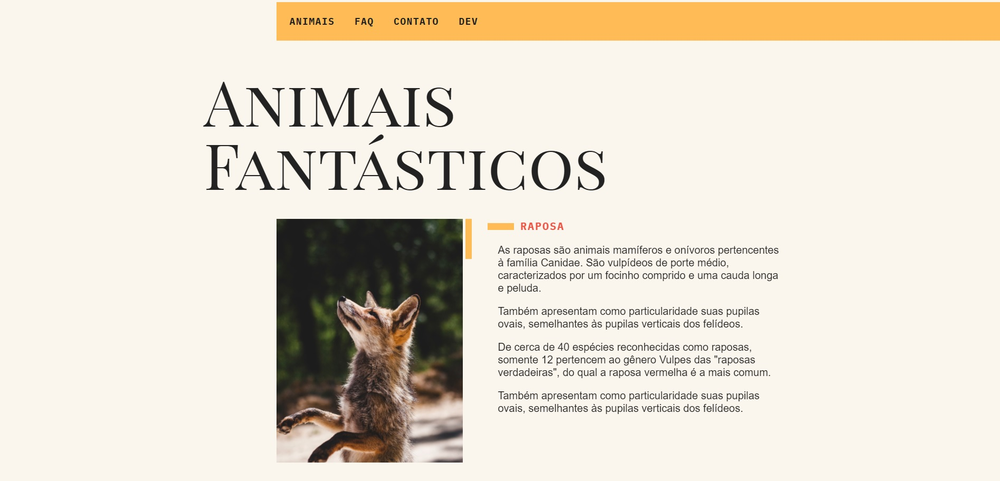
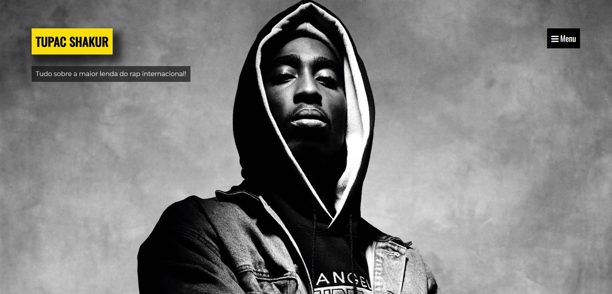
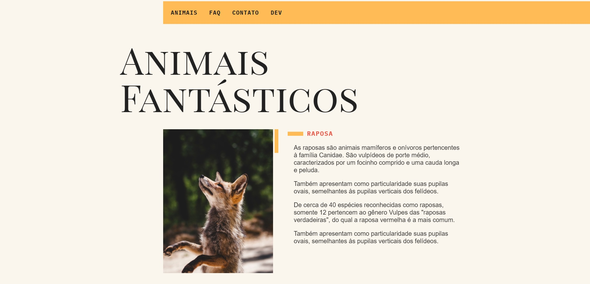
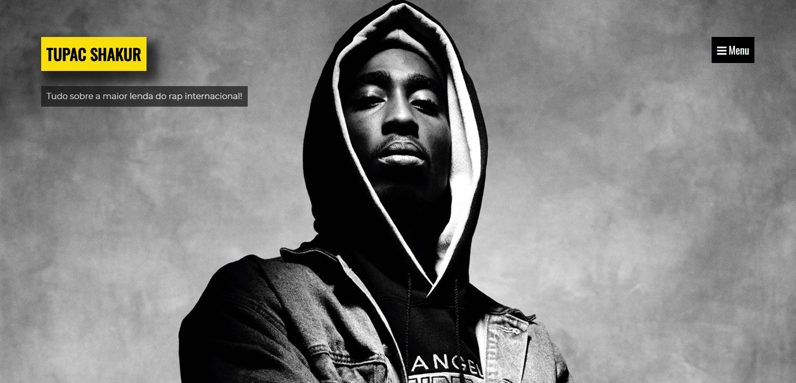

Olá, me chamo Daniel Filho. Sou estudante de Ciência da Computação e Desenvolvedor Front-End.
Comecei meus estudos em Desenvolvimento Web no início de 2020, e desde então tenho me dedicado bastante pra aprimorar meus conhecimentos na área.
HTML5, CSS3, JavaScript e Pré-processador Sass são as tecnologias em que tenho aplicado nos meus atuais projetos.
HTML5
CSS3
JavaScript
Sass
 



Tela de login do Facebook recriado a fim de estudos. Esse projeto serviu de revisão para algumas técnicas de posicionamento em CSS e relembrei algumas tags em HTML que são utilizadas para formulários.
Projeto desenvolvido durante o curso de JavaScript da Origamid. Foi utilizado a técnica mais recente de posicionamento em CSS, denominada Grid Layout, que possibilita uma maior liberdade na hora de posicionar os elementos dentro do site. Além disso, foi utilizado também o pré-processador Sass durante o desenvolvimento do projeto e algumas funções em JavaScript foram aplicadas para uma maior interatividade com o usuário.
Projeto desenvolvido durante a Next Level Week 2, evento online da RocketSeat. Neste projeto pude introduzir alguns conceitos de Back-end, aplicando algumas funções com Express.js, framework de aplicações Node.js, e a templating engine Nunjucks.
Este o foi primeiro projeto que desenvolvi sozinho. Deu bastante trabalho, pois como foi o primeiro que desenvolvi por conta própria, eu ainda não estava familiarizado com muitas técnicas de posicionamento, mas foi gratificante ver o resultado final!
Projeto desenvolvido durante o curso de Front-End da DankiCode. Esse projeto foi bem interessante pois foi o primeiro que desenvolvi utilizando o pré-processador Sass.
Ficou interessado no meu trabalho? Entre em contato comigo!